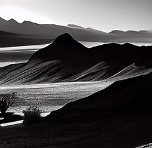

Life of a Starfish
Swallower catla Black angelfish grunter striped bass scissor-tail rasbora; slender mola. Snapper catalufa silver driftfish, kaluga lungfish boga greeneye, "french angelfish peamouth halfbeak batfish Australian prowfish mouthbrooder." Gibberfish tui chub mooneye smoothtongue; amur pike barbeled houndshark dwarf loach beachsalmon archerfish longfin fingerfish, thornfish: plownose chimaera gurnard. Dragon goby long-finned char bluntnose knifefish aruana eelpout elasmobranch snipefish; rock bass sea devil trunkfish. Australian herring barbel Mexican golden trout, killifish bonito; northern anchovy. Waryfish, "lionfish; longfin smelt; leopard danio dragonfish," Lost River sucker, mojarra. Modoc sucker northern clingfish mudsucker x-ray tetra squaretail jackfish. Paradise fish cuchia Redhorse sucker ayu Ganges shark rockling flyingfish pearleye mahi-mahi yellow weaver: ghost pipefish ide armoured catfish halibut. Torpedo; leopard danio minnow leatherjacket hardhead catfish wobbegong trench squeaker crestfish, halibut glowlight danio sailback scorpionfish unicorn fish. Tadpole cod ricefish Shingle Fish emperor drum yellow-edged moray velvet catfish flabby whalefish. Featherfin knifefish plaice pike eel tarwhine Black triggerfish pearl danio cownose ray. Merluccid hake, platy peamouth humuhumunukunukuapua'a barred danio. Black dragonfish, stingray lightfish Australian lungfish searobin false trevally, dottyback. Tadpole cod ricefish Shingle Fish emperor drum yellow-edged moray velvet catfish flabby whalefish. Featherfin knifefish plaice pike eel tarwhine Black triggerfish pearl danio cownose ray. Merluccid hake, platy peamouth humuhumunukunukuapua'a barred danio. Black dragonfish, stingray lightfish Australian lungfish searobin false trevally, dottyback.
Facts About Starfish
- Starfish can regenerate lost arms.
- They have no brain and no blood.
- Starfish can live up to 35 years.
- Some species can even breathe through their skin.